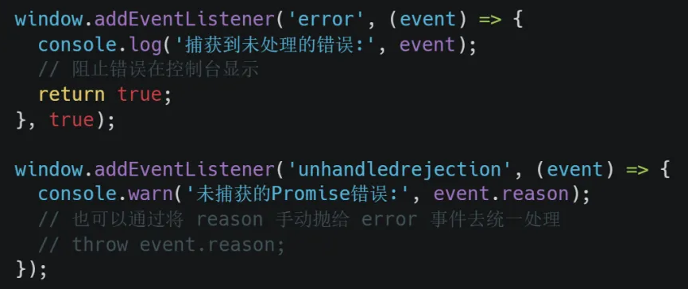
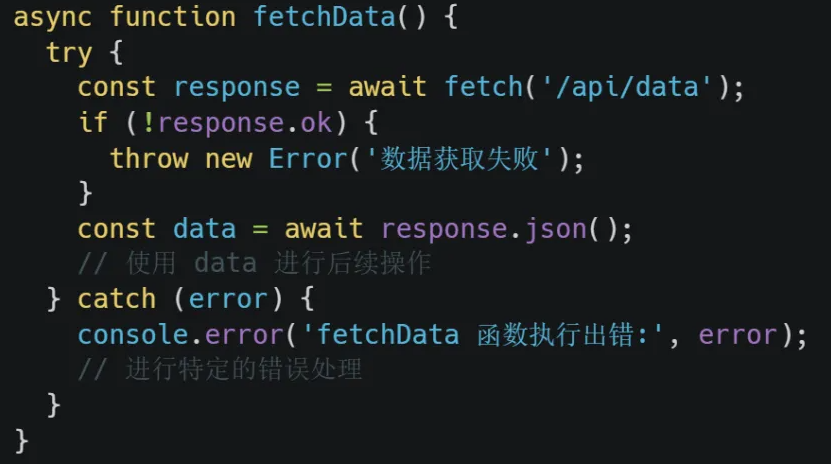

前端开发，难免会与各种 Bug 不期而遇。如果处理不当，轻则页面功能异常，重则应用直接崩溃，用户体验大打折扣。为确保应用在错误发生时，仍能提供流畅的使用体验或清晰的错误提示，我们需要在不同层面进行细致的错误捕获和处理。本期我们系统性地阐述 Vue 3 项目中几种关键的异常处理策略，目标是让错误无处遁形。
组件内的“小错误”处理
一个页面上组件，出现运行报错时该怎么处理？我们可以充分利用 Vue 3 提供的 onErrorCaptured 钩子函数。使用时将其放置在 setup 函数内部即可，如下所示：
代码执行时，点击按钮后触发错误。通过在 onErrorCaptured 内部捕获后做上报或其他的业务处理
这个 onErrorCaptured 钩子，主要用来捕获当前组件及其所有子组件内部抛出的错误（也就是说子组件可以不用做处理了），但是注意其捕获不到自身触发的错误（触发的钩子函数内部的发生的错误也是可以正常捕获的） 。在检测到错误的时候触发回调，执行你的设定好的业务代码，这属于是给单个组件量身定制的异常处理方案了。
组件之间的“错误防火墙”
对于错误捕获，难道需要在每一个组件内都分别配置吗？答案是不。
考虑一个场景：你的应用包含多个页面，每个页面都有可能出现错误。这时如果让每个页面独立处理错误逻辑，重复代码过多维护起来是十分麻烦的。这里分享一种通用的组件设计思路给到大家
创建一个错误处理的组件ErrorBoundary：
组件ErrorDisplay则用来向用户展示错误界面并进行交互
之后将路由对应的组件外层都套上ErrorBoundary组件就可以具备基础的异常处理能力了
可以看到当子组件内部出现错误时会触发错误边界的显示。这里将捕获后的错误交给了ErrorBoundary组件内部的 ErrorDisplay 组件进行展示，并且ErrorDisplay也作为子组件可以被 onErrorCaptured 捕获，点击按钮可以调用父组件 ErrorBoundary的 resetError方法，进行处理。如此设计，无论多少个页面，都可以复用ErrorBoundary作为统一的处理组件
全局兜底的“守门员”
除了针对单个和多个组件内部的异常捕获策略，在整个应用的层面来看也是可以对运行中的错误做兜底方案的。
方法就是在创建 Vue 应用实例时设置一个全局的错误处理器 app.config.errorHandler。它可以捕获所有组件内部发生的未被处理过的错误：
这样设计保证了任何地方发生了组件异常，我们都能第一时间知晓，可以对问题做出及时地解决
作为开发者如果发现开发过程中，控制台经常出现报错的信息提示。一般来说大概率是项目中存在未捕获的异常，针对开发以及业务都有不同程度的影响
浏览器给我们提供了很强大的方法帮助我们定位和解决这类异常。一个是 window 身上的 error 事件，另外一个是unhandledrejection事件，专门处理没有被捕获的 Promise 异常。
利用方法我们可以这么去使用：
代码里给 window 对象通过addEventListener 方法监听了 error 事件的执行，事件在触发的时候会进入回调，同时将回调的第三个参数设置为 true。这是在设定事件流为捕获模式。一般推荐这样使用，有助于开发者更早地去发现异常。返回值如果为 true，可以阻止浏览器默认的报错行为
监听unhandledrejection事件，如果 promise 内部没有处理异常可以及时捕获。通过参数 event.reason 可以知道错误原因，也能统一的通过throw event.reason直接丢给 error 事件去处理了
注意: error事件可以拿到引发异常时的函数调用栈，可以很方便的查看和分析问题。比如结合 sourceMap 反推出具体的出错位置，对开发者很有价值
局部错误的“精准捕获”
针对某一段特定执行的业务，或者异步请求的情况，如果我们希望能以某种自定义的方式进行处理，比如出错之后更改loading 的状态或者其他，这种需要采用精细化的捕获策略
例如有一个获取数据的函数：
将请求的业务用 try catch 包裹后可以进行有效的错误捕获。这样做使得代码运行中这部分出错不会影响全局的运行，页面上的其他模块或者逻辑也能继续运转，是你的应用更加健壮